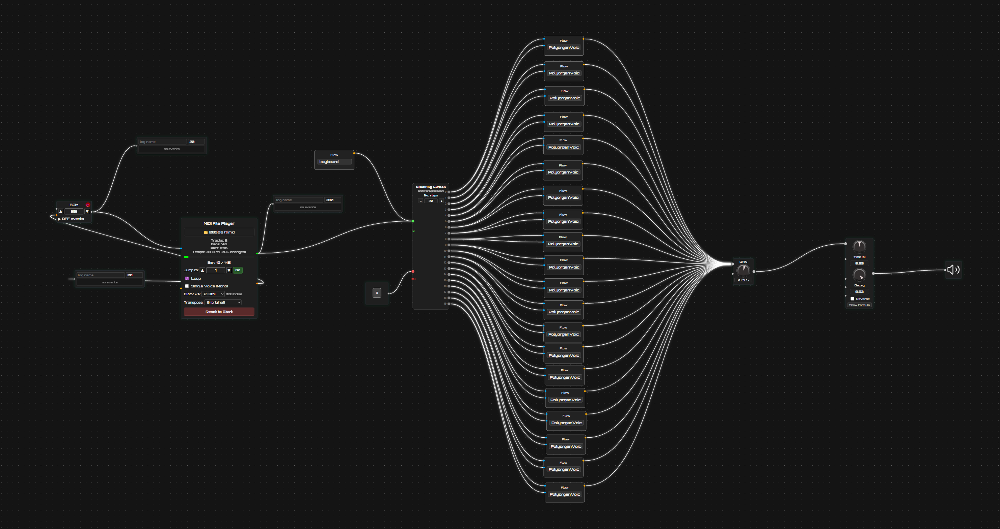
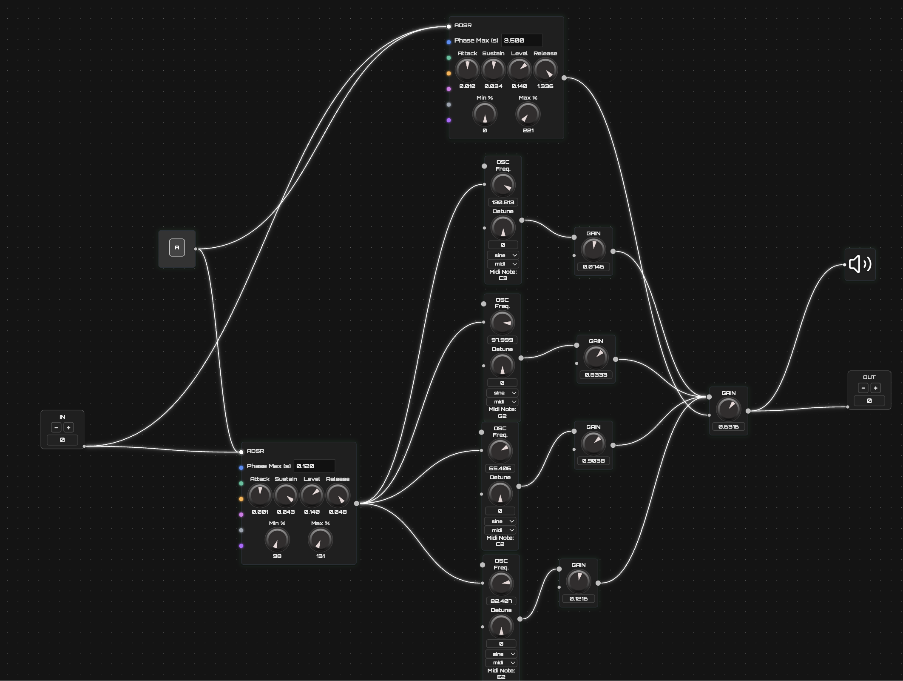
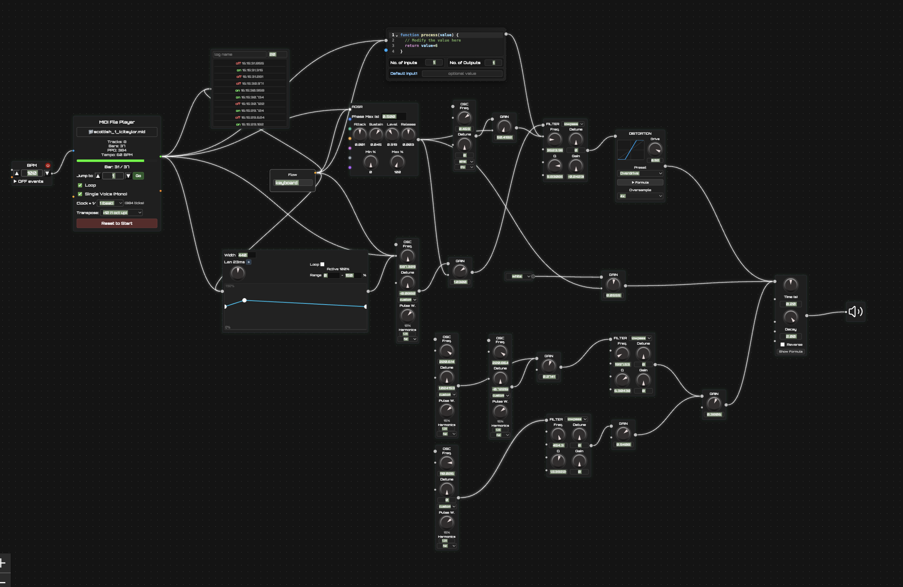
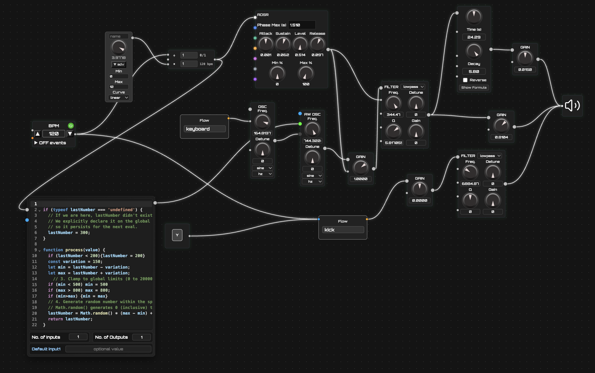

MODULAR SYNTH IN THE BROWSER
The gap I needed to fill
I wanted a playground where I could implement programming and flow ideas at a very fast pace — and I simply couldn’t find myself in any of the existing frameworks.
Existing tools are already very good and sophisticated but too low-level.
I wanted a middle ground.
Synflow: the playground I built
A browser-native, node-graph workstation for building audio, MIDI, and control flows. No install. No compile step. Most modules use native Browser implementations.
Runs in any modern browser.
No install
No account
No compile step
Fast development times
Node graph powered by React Flow.
Patch like Eurorack
Knobs like Eurorack
Not bound to prebuild modules
No Code required, but easy to implement if needed
Add a node -> wire it -> hear it
No project overhead
Can build a new node in 2-4 hours
Easy to debug in browser engine
Seamless connection to other nodes
Typescript is robust to failure
Easy documentation in HTML
The technology stack
Four layers — each chosen because it does one thing well and stays out of the others' way.
- Nodes connected into a directed acyclic graph
- Browser Native C++ render thread: OscillatorNode, BiquadFilterNode, GainNode, ConvolverNode ...…
- AudioWorklet: custom DSP in a high-priority JS thread
- XYFlow nodes with typed handles (Event, Audio or both)
- Edges = signal wires:
- drag-to-connect
- fires graph events
- Custom React node components:
- Knobs
- Waveform previews
- you can add everything in React possible
- Easy publish / subscribe across the whole project
- Independant Event Bus
- MIDI, clock ticks, gate signals, CC values -- all routed as events
- Extremely easy implementation
- No Redux, no Zustand -- intentionally minimal
- importable as singleton when needed
- Translates XYFlow edge add/remove to AudioNode.connect / disconnect
- Owns the AudioContext
- Node registry: maps each XYFlow node type to its Web Audio factory
- Hot-swap parameters without tearing down the graph
Architecture: how the layers communicate
UI never touches Web Audio directly. All control messages cross the EventBus. Audio signals stay inside the Audio Graph Manager.
typed · synchronous
no external deps
____THE______46_NODES_______STILL_GROWING
What you can build with Synflow
- Build kicks, snares, hi-hats with noise + envelopes
- synths / organs
- bells
- bagpipes
- ... anything you can imagine with oscillators, noise, filters, and envelopes
- Clock / Step sequencer which
- Triggers ADSR node
- to make beats
- Mic to
- Vocoder to
- sawtooth carrier
- Results in Daft Punk like Talk Box
- Synth
- E-Guitar
- Your voice
- Clock to:
- Arpeggiator
- Frequency sequencer
- Sample engine
- Endless evolving patterns, no code.
- Prototype a new filter
- Oscillator
- or effect
- hear result instantly.
- Create new node or flow when happy with result
Organ Voice

Organ

Kick

Bagpipe

Electronic Beat

Roadmap
- Being able to create full compositions
- Therefore creating something like an orchestrator node
- Physical modelling algorithm nodes (e.g. Karplus-Strong)
- Being able to export patches as libraries and import them into Web Projects/Games
- Undo / redo history
Wrap-up
- No login · no install · runs in any browser tab
- Open the node palette (top-left +) to start patching
- Every node has a built-in docs & preview panel
- MIT license · contributions welcome
- React + XYFlow + Web Audio API + EventBus
- 46 nodes: audio sources, transforming, destinations, events, MIDI & seq, logic
- AudioWorklet + optional WASM for custom DSP